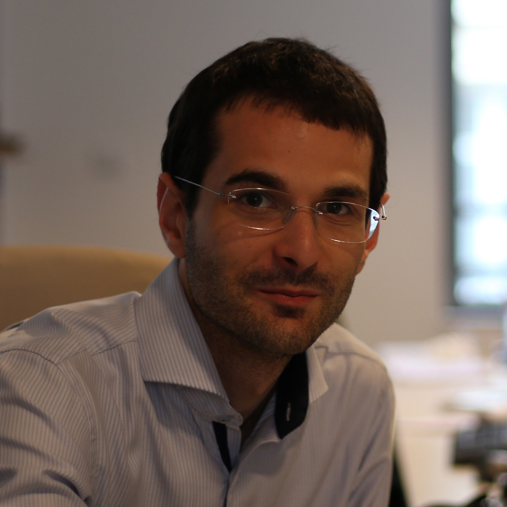

- 2015-2019
- Ingénieur système/DevOps chez LinkFluence
- Gestion d'un réseau routé dynamiquement en OSPF
- Exploitation et optimisation de l'infrastructure dans un environnement hybride (Cloud - AWS & Alicloud / Serveurs physiques - OVH & Leaseweb)
- Développement d'outils d'administration d'infrastructure
- Maintenance de microservices (clojure, java, python, perl)
- Intégration de clusters Hadoop/HBase, Hadoop/YARN/Spark et Elasticsearch
- Ingénieur système/DevOps chez LinkFluence
- 2011-2015
- Directeur des Systèmes d'information chez Weblib
- Gestion de l'infrastructure Interne
- Lead Développeur de l'API Weblib (Perl Dancer)
- Support L2-L3 des clients
- Directeur des Systèmes d'information chez Weblib
- 2011
- Stage de fin d'Etude chez Kleegroup (Mise en place d'un outil de commande centralisé de firewall Juniper)
- 2009-2010
- Responsable de l'équipement dans l'association Supelec Rezo
- Chef de projet du renouvellement du coeur de réseau de l'association.
- Mise en place du wifi basé sur du WPA Enterprise avec un serveur freeradius et backend SQL.
- Responsable de l'équipement dans l'association Supelec Rezo
- 2010
- Stage chez Orange Business Services sur le thème : modélisation d'infrastructures réseau à base de routeurs Cisco sous le logiciel de simulation GNS3
- OS : Linux (Debian/redHat), Windows server, MacOSX
- Environnement réseau : Cisco(L2&L3), HP(L2), Juniper(L2&L3), Ruckus Wireless, Openwrt, Linux(Openvpn, ip route,...)
- Environnement de virtualisation : VMware, Proxmox(openvz, kvm), Xen Server, AWS
- BDD : MySQL, MariaDB, Galera Cluster, MS SQL.
- Stockage clé/valeur : hbase
- Cloud provider: AWS
- Index : ElasticSearch
- Authentification : Microsoft AD, Freeradius.
- Language : Web(html,css,js, php), perl, python, java, bash, clojure
- 2008-2011 Diplôme d'ingénieur à L'école Supérieur d'Electricité (SUPELEC)
- 2008-2006 Classe préparatoire scientifique au lycée Chaptal à Paris
- 2006 Bac S obtenu au lycée Saint Jean-de-Passy avec la mention Bien.
- Français : langue maternelle
- Anglais : Niveau professionnel
- Musicaux : Pratique régulièrement le piano. Joue de l'orgue
- Nouvelles technologies : home cinéma, format HD (aspects matériels et logiciels)
- Autres : Photographie, film, randonnées.
- Région : La Bretagne